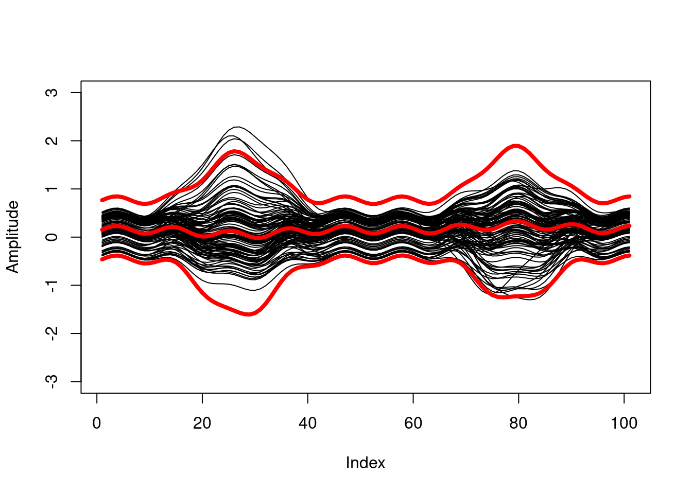

The FunBootBand package contains one function band(), which generates statistical (prediction or confidence) bands from time series or curve data using a functional approach and bootstrapping.
Acknowledgments
At its core, this package is an implementation of the method developed by Sutherland et al. (1988) and Olshen et al. (1989), described in detail in Lenhoff et al. (1999). The method was originally written as a MATLAB program by Doris Oriwol and later translated into R and extended with an approach to handle nested/hierarchical data (see also https://github.com/koda86/floa).
For more theoretical background, see this publication:
Koska, D., Oriwol, D., & Maiwald, C. (2023). Comparison of statistical models for characterizing continuous differences between two biomechanical measurement systems. Journal of Biomechanics 149, https://doi.org/10.1016/j.jbiomech.2023.111506.
Installation
You can install the development version of FunBootBand from GitHub with:
# install.packages("devtools")
devtools::install_github("koda86/FunBootBand")Usage
The package comes with a built-in data set (named data) of dimension [101, 110], meaning 110 curves are arranged in columns of length 101 (each column represents a curve). Your data set should be structured the same way.
Here’s how to use the band() function with the built-in data set (iid case).
library(FunBootBand)
# In the example, the number of bootstrap iterations `B` is set to only 5 to guarantee a fast calculation.
# In reality, this value would be too low (package default: 400).
prediction.band <- band(data,
type = "prediction",
B = 5,
alpha = 0.05,
iid = TRUE)
# Function output:
rownames(prediction.band)
#> [1] "upper" "mean" "lower"
str(prediction.band)
#> num [1:3, 1:101] 0.849 0.188 -0.472 0.892 0.232 ...
#> - attr(*, "dimnames")=List of 2
#> ..$ : chr [1:3] "upper" "mean" "lower"
#> ..$ : NULLYou may, i.e., print the calculated limits alongside the original curves.
plot(data[, 1], type = "l", ylim = c(-3, 3), ylab = "Amplitude")
apply(data, 2, function(x) lines(x))
apply(prediction.band, 1, function(x) lines(x, col = "red", lwd = 4))
Function arguments
alpha
When constructing prediction intervals, the significance level alpha will affect the band width. Lower values of alpha will result in wider bands.
iid
As in many empirical data sets, the curves in the built-in data set data have a hierarchical structure, which means that curves are arranged in clusters. These clusters may e.g. represent subjects, within which several curves are nested. The header in data specifies this cluster structure by assigning curves of the same cluster the same letter. The function argument iid, as in independent and identically distributed, specifies if the cluster structure is accounted for (iid=FALSE), or if curves are treated as independent (iid=TRUE). In the iid=TRUE case, no header is required. For the other function arguments, please see the function description or Function Arguments. They should be self-explanatory.
k.coef
In the applied functional approach, curves are approximated using Fourier series. k.coef sets the number of Fourier coefficients and depends on the smoothness of the curves. The default value of 50 is rather high for smooth curves and may be reduced. This, however, should be accompanied by some sort of (graphical) plausibility check. If curves are too rough, or if curves are generated by a non-stationary process, the functional approach may fail altogether.
B
The distribution of the curves and thus the band width is estimated using a bootstrap procedure. Larger values typically provide better estimates, but will take longer to compute. The band width is likely to converge to a certain value. Therefore, different values of B may be tested to investigate the convergence behavior. By default, B is set to 400.
Issues and contributing
In case you find a bug or run into other problems, please look for the “Issues” tab. Feedback of any kind is welcome.
References
Lenhoff, M.W., Santner, T.J., Otis, J.C., Peterson, M.G., Williams, B.J., Backus, S.I., 1999. Bootstrap prediction and confidence bands: a superior statistical method for analysis of gait data. Gait Posture 9 (1), 10–17. http://dx.doi.org/10.1016/s0966- 6362(98)00043-5.
Olshen, R.A., Biden, E.N., Wyatt, M.P., Sutherland, D.H., 1989. Gait analysis and the bootstrap. Ann. Statist. 17 (4), http://dx.doi.org/10.1214/aos/1176347372.
Sutherland, D., Olshen, R., Biden, E., Wyatt, M., 1988. Development of Mature Walking. Mac Keith Press.